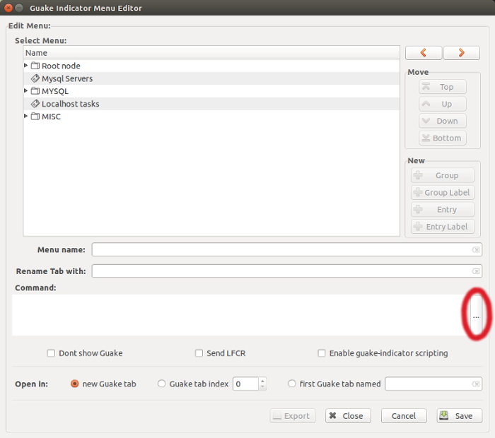

- Guake Indicator
Guake indicator plugin system
In order to allow building custom terminal commands quickly, Guake indicator comes with a very simple plugin system.When building a new command click on the "..." button on the right of the "command" text area:

Guake-indicator then scans all the xml and glade files stored locally under the ~/.guake-indicator/plugins directory. If there aren't any present (i.e. after the first launch) the list will be empty so you'll have to add a new one.
To add a new plugin click the "add" button. Guake-indicator will query the plugins directory to see which plugins are available and it will copy the selected plugins under the local plugin directory.
To use a plugin select it from the list and click Apply.
A .xml plugin causes Guake indicator to fill in the build command with data retrieved and parsed from the plugin itself.
The .glade plugin files, instead, are just helpers for builing new commands using a easy and convenient GUI created with Glade interface designer.
If you want to create an .xml plugin you could find it easier using the "export" button after creating a new entry.
When creating a new .glade plugin, remember to :
- Put the command you want to run inside the name field of the GtkLabel under the HBOX0 element
- Set each command option as the name of a GtkEntry
- Set the name of the Close button to "btn_edit_menu_close_dialog"
- Set the name of the Save button to "btn_edit_menu_save"
Site viewed
 times
times
Special Thanks to all Contributors